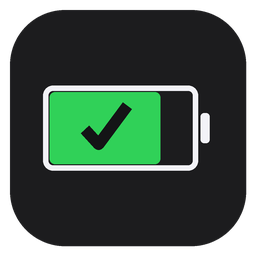

Plug in an iPhone or iPad, see battery health, storage, and cycle count instantly.
Plug in over USB and results appear in about a second — no button to press.
Battery health %, cycle count, storage size, serial number, and model — all in one screen.
Check off screen, cameras, speakers, buttons, and Wi-Fi — saved per device.
Every test writes to a spreadsheet automatically, with duplicate detection so you never re-test the same unit twice.